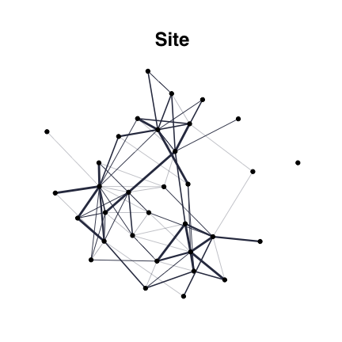

EMtreeinfers interaction networks from abundance data, implementing the procedure described in Momal et al.. This package uses averages over spanning trees within a Poisson log-Normal Model (PLNmodels), and involves plotting funcitonalities (usingggraphandtydigraph).
Installation
CRAN dependencies
required_CRAN <- c("Matrix", "purrr","parallel", "mvtnorm", "vegan","huge",
"ggplot2", "magrittr", "dplyr","tidyr", "tibble",
"PLNmodels","ggraph", "tidygraph")
not_installed_CRAN <- setdiff(required_CRAN, rownames(installed.packages()))
if (length(not_installed_CRAN) > 0) install.packages(not_installed_CRAN)
Installation of EMtree
You can install the development version of EMtree:
devtools::install_github("Rmomal/EMtree")Reference
Please cite our work using the following reference:
Example with Fatala river fishes
This is a basic example which shows you how to infer a network, using Barans95 data from the ade4 package.
Data
library(ade4)
library(tidyverse)
data(baran95)
counts = as.matrix(baran95$fau)
covar = as_tibble(baran95$plan)
n = nrow(counts)
p = ncol(counts)head(counts)
#> AMA CAS CHI CHL CJO CST CTR CWA CYS DAF EFI ELA GDE GME HFA HFO IAF LFA
#> 1 0 2 0 3 0 0 0 0 0 0 71 1 5 6 0 0 7 3
#> 2 0 1 0 0 0 0 0 0 0 0 118 2 3 0 0 0 8 1
#> 3 0 2 0 3 0 0 0 0 0 0 69 0 6 2 0 0 8 3
#> 4 0 0 0 2 0 0 0 0 0 0 56 0 0 0 0 0 1 0
#> 5 0 0 0 0 0 0 0 0 3 0 0 1 1 0 0 0 2 2
#> 6 0 0 0 0 0 0 0 0 5 0 0 0 2 0 0 0 0 0
#> LGR LNI PAA PBR PEL PJU PLE PMO POQ PPA PQQ PTY SEB TIN TLE
#> 1 3 0 0 5 2 9 26 0 4 0 0 0 22 0 2
#> 2 7 0 0 0 0 0 113 0 1 0 0 1 18 0 1
#> 3 0 0 0 1 0 3 0 0 1 0 0 0 3 0 0
#> 4 2 0 0 0 0 0 0 0 0 0 0 0 15 0 0
#> 5 5 0 0 0 3 0 0 0 4 0 0 3 0 0 0
#> 6 9 0 0 2 4 4 0 2 0 0 0 1 0 0 0
head(covar)
#> # A tibble: 6 x 2
#> date site
#> <fct> <fct>
#> 1 apr93 km03
#> 2 apr93 km03
#> 3 apr93 km03
#> 4 apr93 km03
#> 5 apr93 km17
#> 6 apr93 km17Run EMtree function
library(EMtree)
set.seed(3)
output<-EMtree(model, maxIter = 10, plot=TRUE)
#>
#> Likelihoods: -45.17559 , -45.09618 , -45.08772 , -45.087 , -45.08627 , -45.08587 , -45.08572 , -45.08566 ,
#>
#> Convergence took 0.42 secs and 8 iterations.
#> Likelihood difference = 6.462706e-05
#> Betas difference = 1.804511e-11
str(output)
#> List of 6
#> $ edges_prob : num [1:33, 1:33] 0 0.00696 0.02016 0.14686 0.03192 ...
#> $ edges_weight: num [1:33, 1:33] 0 0.000946 0.000946 0.000948 0.000947 ...
#> $ logpY : num [1:8] -45.2 -45.1 -45.1 -45.1 -45.1 ...
#> $ maxIter : num 8
#> $ norm.cst : num 2.07e-50
#> $ timeEM : 'difftime' num 0.417969226837158
#> ..- attr(*, "units")= chr "secs"Foster robustness with resampling :
library(parallel)
resample_output<-ResampleEMtree(counts=counts, covar_matrix = covar$site , S=5, maxIter=10,cond.tol=1e-8, cores=1)
#>
#> S= 1
#> S= 2
#> S= 3
#> S= 4
#> S= 5
str(resample_output)
#> List of 3
#> $ Pmat : num [1:5, 1:528] 0.01361 0.01728 0.00562 0.00348 0.00364 ...
#> $ maxIter: num [1:5] 3 3 7 8 5
#> $ times : 'difftime' num [1:5] 0.166561126708984 0.155266046524048 0.291126012802124 0.338460922241211 ...
#> ..- attr(*, "units")= chr "secs"Several models with resampling :
library(parallel)
tested_models=list(1,2,c(1,2))
models_names=c("date","site","date + site")
compare_output<-ComparEMtree(counts, covar_matrix=covar, models=tested_models, m_names=models_names, Pt=0.15, S=3, maxIter=5,cond.tol=1e-8,cores=1)
#>
#> model date
#> S= 1
#> S= 2
#> S= 3
#> model site
#> S= 1
#> S= 2
#> S= 3
#> model date + site
#> S= 1
#> S= 2
#> S= 3
str(compare_output)
#> tibble [1,584 × 4] (S3: tbl_df/tbl/data.frame)
#> $ node1 : chr [1:1584] "1" "1" "2" "1" ...
#> $ node2 : chr [1:1584] "2" "3" "3" "4" ...
#> $ model : chr [1:1584] "date" "date" "date" "date" ...
#> $ weight: num [1:1584] 0 0 0 0 0 ...Graphics
From EMtree output
Simple network:
library(ggraph)
library(tidygraph)
library(viridis)
set.seed(200)
edges_prob<- output$edges_prob
edges_prob[edges_prob<2/p]<-0
draw_network(edges_prob,title="Site", pal="dodgerblue3", layout="nicely",curv=0.1)$G
From ResampleEMtree output
df<-freq_selec(resample_output$Pmat,Pt=2/p+0.1)
draw_network(df,"Site", layout="nicely")$G
df[which(df<1e-6)]=0
draw_network(df,"Site", layout="nicely")$Gdraw_network(df,"Site", layout="nicely")$graph_data
#> # A tbl_graph: 33 nodes and 80 edges
#> #
#> # An undirected simple graph with 2 components
#> #
#> # Node Data: 33 x 8 (active)
#> btw bool_btw bool_deg deg title name label finalcolor
#> <dbl> <lgl> <lgl> <dbl> <chr> <int> <chr> <lgl>
#> 1 18.5 FALSE TRUE 8 Site 1 "" FALSE
#> 2 22 FALSE TRUE 5 Site 2 "" FALSE
#> 3 4 FALSE TRUE 2 Site 3 "" FALSE
#> 4 0 FALSE TRUE 4 Site 4 "" FALSE
#> 5 0 FALSE TRUE 2 Site 5 "" FALSE
#> 6 29.3 FALSE TRUE 4 Site 6 "" FALSE
#> # … with 27 more rows
#> #
#> # Edge Data: 80 x 6
#> from to weight btw.weights neibs title
#> <int> <int> <dbl> <dbl> <lgl> <chr>
#> 1 1 4 0.4 1.25 FALSE Site
#> 2 1 7 0.2 1.79 FALSE Site
#> 3 1 8 0.2 1.79 FALSE Site
#> # … with 77 more rowsFacet for plotting several models in one shot
Comparing network by eye is difficult. In particular, choosing the right layout to do so is often troublesome. Here by default, the circle layout is used so that differences in density are easily seen.
compar_graphs(compare_output,alpha=TRUE)$G
However, the user can decide another layout. The nodes position is preserved along the networks.
compar_graphs(compare_output,alpha=FALSE, layout="nicely", curv=0.1, base_model="site")$G